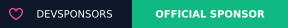
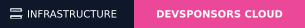

توصیهشده برای همه پروژهها: نشان متمرکز شبکه (Main Repo Badge)
بج رسمی و متمرکز جذب اسپانسر
این نشان مستقیماً به مخزن مرکزی هاب متصل است. با پیوستن اسپانسر جدید به شبکه، فایل بج در مخزن اصلی بهروزرسانی شده و نشان حامی بدون نیاز به هیچ تغییری در کل ریپازیتوریهای توسعهدهندگان در سراسر گیتهاب فوراً تغییر میکند.

کد مارکداون برای قرار دادن در صدر README.md پروژهتان:
[](https://devsponsors.github.io)
آدرس مستقیم و بدون واسطه در مخزن گیتهاب (GitHub Raw):
https://raw.githubusercontent.com/devsponsors/devsponsors.github.io/main/assets/badges/sponsor.svg
نشان رسمی شماره ۱ (Verified Member)
بج عضویت تاییدشده در DevSponsors
نشان رسمی برای بالای README پروژههای فعال عضو هاب
[](https://devsponsors.github.io)
نشان رسمی شماره ۲ (Official Sponsor)
بج دعوت به اسپانسرشیپ و حمایت رسمی
هدایت مستقیم شرکتهای حامی به صفحه درخواست اسپانسری با تغییر خودکار لوگو
[](https://devsponsors.github.io)
نشان رسمی شماره ۳ (Infrastructure Ready)
بج گرنت و زیرساخت ابری
برای پروژههایی که از زیرساختهای سرور هاب استفاده میکنند

[](https://devsponsors.github.io/mediakit.html)